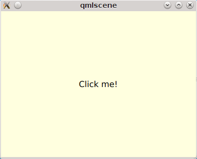

From release Qt 5.0 well-known Qt Widgets from QtGui have become obsolete and were moved to QtWidgets module. New main GUI toolkit is QtQuick (version 1.0 in Qt < 5.0 and version 2.0 with Qt > 5.0). It allows to create GUI in declarative manner with some ECMASript code for simple event handling. The parts of application which are critical for speed should be written in C++.
Aim of lablqt is to allow writing speed-critical logic in OCaml instead of C++.
Initially, QtQuick was created for mobile applications and resizable layouts were not supported well. Probably QtQuick was not a good choice for desktop applications. From version Qt 5.1 modules QtQuick.Controls and QtQuick.Layouts are part of Qt. They are a set controls for desktop applications: toolbars, buttons, menus and layouts. They also look native on different platforms. Our first "Hello world" application will use simple controls from Qt<5.1. In the second I’ll going to show you QtQuick.Controls. Sources of this examples you can clone from Github.
Getting Qt5
Using package repository
In Debian/unstable and Ubuntu 13.10 current (15th of December, 2013) version of Qt is 5.1.1. Qt 5.2 can be expected in Ubuntu 14.04. When it will be updated you can install packages qt5-qmake and qtdeclarative5-dev. At this moment you should consider getting installer or compile it yourself.
Official packages
are available on Qt Project.
Building from Git
Official Qt Project wiki is there. Below you can see my-init and configure scripts which configure Qt5 to build only modules needed by lablqt.
$ cat my-init #!/bin/bash MODULES=qtbase,qtdeclarative,qtjsbackend,qtactiveqt,qtquickcontrols perl ./init-repository --module-subset=$MODULES -f $@
$ cat my-configure #!/bin/bash set -x ./configure -developer-build -opensource -nomake examples -nomake tests -confirm-license \ -no-gtkstyle -no-glib -no-cups $@
Qt compiles some code during ./configure stage, don’t worry, it’s normal.
Compilation time depends on your machine. Some fellas have finished with -j8 in 5 minutes. On my Intel Core i3 I can do it with -j2 in 30 minutes.
I have discovered some issues with compilation my QOCamlBrowser app recently on Ubuntu 13.10 32bit on Intel Core 2 Duo CPU. My application was crashing in qt_memfill32_sse2 (dest=0x8910e10, value=0, count=194) at painting/qdrawhelper_sse2.cpp:264. So, I have decided to disable special instruction sets for Qt5 on this machine by improving ./my-configure script. I put this stuff in P.S. section because I haven’t tested it on my Intel i3 machine.
#!/bin/bash set -x NOFB="-no-directfb -no-linuxfb -no-eglfs -no-kms" SQL="-no-sql-mysql -no-sql-sqlite" NOSSE="-no-sse2 -no-sse3 -no-ssse3 -no-sse4.1 -no-sse4.2 -no-avx -no-avx2" ./configure -developer-build -opensource -nomake examples -nomake tests -confirm-license \ -no-gtkstyle -no-glib -no-cups -no-nis \ $SQL $NOFB $NOSSE \ $@
Value $NOFB disables framebuffer and KMS support. I think these low-level interfaces are not needed for our OCaml GUI projects. Also we disable SQLite and MySQL DBMS in Qt. Value $NOSSE disables all special instruction sets.With that ./my-configure QtQuick examples in Qt still work and my QOcamlBrowser startups without crash.
If you want to compile Qt faster you can study next options of ./configure script:
-no-feature-<feature> Do not compile in <feature>.
-feature-<feature> .. Compile in <feature>. The available features
are described in src/corelib/global/qfeatures.txt
Mac users can consider invoking configure using ./configure -prefix /opt/Qt/5.2.1 -opensource -nomake tests -no-xcb -no-framework. I can’t test that but some fellas can.
Next script will be useful (as a part of ~/.bashrc) for setting local environment for your Qt5 build:
with_qt5() {
export PATH=~/mand/prog/qt/qt5/qtbase/bin:$PATH # where Qt5 has been build
qmake -query QT_VERSION
export LD_LIBRARY_PATH=`qmake -query QT_INSTALL_LIBS`:$LD_LIBRARY_PATH
export PKG_CONFIG_PATH=`qmake -query QT_INSTALL_LIBS`/pkgconfig:$PKG_CONFIG_PATH
}
"Hello world!" in QtQuick
If we put this to Root.qml we will get a rectangle with text Click me! in its center. After clicking on window text clicked will appear at console.
import QtQuick 2.0
import QtQuick.Controls 1.0
ApplicationWindow {
color: "#FFFFDF" // we declare rectangle with custom background color
width: 400;
height: 300; // with custom size
Text {
anchors.centerIn: parent
text: "Click me!" // text in center of window
}
MouseArea {
anchors.fill: parent // all space in parent Rectangle will be clickable
onClicked: console.log("clicked")
}
}
This QML file is already correct application. If you execute it using command qmlscene Root.qml you will get a window like this:

At this moment OCaml+QtQuick applications should startup from OCaml.
let main () =
print_endline "Startup initialization"
let () =
run_with_QQmlApplicationEngine Sys.argv main "Root.qml"
Function run_with_QQmlApplicationEngine initializes Qt runtime, registers QML context which holds global variables, executes callback with user initialization code and loads .qml file. What you can do during initialization phace will be described below. QML file can be located on disk or you can compile it into your executable with Qt Resource System.
Writing OCaml logic
Let’s create OCaml object which will be exposed to QtQuick engine. It will have single method onMouseClicked with type string -> unit. To generate code we will use mocml generator which you will get after compiling in $LABLQT/src. Let’s put this to input.json (file name doesn’t matter, is configurable):
[ {
"classname": "Controller",
"methods":
[ { "name": "onMouseClicked",
"signature": ["string", "unit"] }
],
"properties": [],
"slots": [],
"signals": []
} ]
After executing mocml input.json three files will be generated: Controller_c.h, Controller_c.cpp and Controller.ml. A part of Controller.ml will look like that:
class virtual base_Controller cppobj = object(self) ... method virtual onMouseClicked: string -> unit end
As you see, base class base_Controller is created. We will inherit it and implement virtual method onMouseClicked in file program.ml:
open QmlContext
let main () =
let controller_cppobj = Controller.create_Controller () in
let controller = object(self)
inherit Controller.base_Controller controller_cppobj as super
method onMouseClicked msg = Printf.printf "OCaml says: '%s'\n%!" msg
end in
set_context_property ~ctx:(get_view_exn ~name:"rootContext") ~name:"controller" controller#handler
After executing QmlContext.set_context_property we are able to use in QML side variable called controller:
ApplicationWindow { // root rectangle
....
MouseArea {
anchors.fill: parent // all space in parent Rectangle will be clickable
onClicked: controller.onMouseClicked("message");
}
}
After executing program when you will click on window you will se console output. Code of this example you can find there: https://github.com/Kakadu/lablqt/tree/qml-dev/qml/helloworld
QtQuick Controls, Layouts and Model/View pattern
Since Qt version 5.1 it easy to create desktop applications which look like native. API documentaion can be found there and there.
ApplicationWindow {
width: 1366
height: 768
menuBar: MenuBar {
Menu {
title: "Edit"
MenuItem {
text: "Cut"; shortcut: "Ctrl+X";
onTriggered: console.log("")
}
MenuItem {
text: "Copy"; shortcut: "Ctrl+C"
onTriggered: console.log("")
}
MenuItem {
text: "Paste"; shortcut: "Ctrl+V"
onTriggered: console.log("")
}
}
}
....
}
toolBar: ToolBar {
RowLayout {
anchors.margins: 8
anchors.fill: parent
ToolButton {
text: "Press me"
onClicked: console.log("Press me clicked")
}
}
}
QtQuick uses Model/View pattern for creating views. I.e. when you create a view you should provide an object with data (model) and a way to render it. Models can be created both in QML file and in C++. Let’s create a model with QML:
ListModel {
id: libraryModel
ListElement{ title: "A Masterpiece" ; author: "Gabriel" }
ListElement{ title: "Brilliance" ; author: "Jens" }
ListElement{ title: "Outstanding" ; author: "Frederik" }
}
It is a ListModel with three elements. Each element has two properties of type string: title and author. We will use them while declaring view for this model:
TableView {
model: libraryModel
anchors.fill: parent
TableViewColumn { title: "Title"; role: "title" }
TableViewColumn { title: "Author"; role: "author" }
}
You can see there a table view with two columns. Each column have header title: "Title" and "Author" respectivly. Elements of this table will be constructed according to its model object (if the model is a list of three elements the three item in view will be constructed). Screenshot there:
Defining model in OCaml
Often we want dynamic models which will report to view about newly added rows, columns and data changes. In Qt world it is achieved by defining model in C++ as a sublclass of QAbstractItemModel. More information in this topic you can get at Qt Project. We also have special option in JSON which subclasses generated object from QAbstractItemModel automatically.
{
"classname": "MainModel",
"basename": "QAbstractItemModel",
"methods": [],
"properties": [],
"slots": [],
"signals": []
}
Our model will provide access to objects which have two properties: author and title. We will call it DataItem and put into input.json too.
{
"classname": "DataItem",
"methods": [],
"properties":
[ { "name": "author",
"get": "author",
"set": "setName",
"notify": "nameChanged",
"type": "string" }
, { "name": "title",
"get": "title",
"set": "setTitle",
"notify": "titleChanged",
"type": "string" }
],
"slots": [],
"signals": []
}
Now let’s define out model and expose it to QtQuick engine in initialization block of program.ml. Initial data will be a list of pairs title/author:
let data =
[ ("Анна Каренина", "Лев Толстой")
; ("Война и Мир", "Лев Толстой")
; ("Les Misérables", "Victor Hugo")
; ("Les Trois Mousquetaires", "Alexandre Dumas, père")
] in
Using it we need to construct DataItems:
let dataItems = List.map (fun (title,author) ->
let cppobj = DataItem.create_DataItem () in
object
inherit DataItem.base_DataItem cppobj as super
method author () = author
method title () = title
end
) data in
Generated MainModel class has many virtual methods. We need only 1-dimensional model, that’s why some methods has very simple implementation
let model_cppobj = MainModel.create_MainModel () in
MainModel.add_role model_cppobj 555 "someRoleName";
let model = object(self)
inherit MainModel.base_MainModel model_cppobj as super
method parent _ = QModelIndex.empty
method columnCount _ = 1
method index row column parent =
if (row>=0 && row self#rowCount parent) then QModelIndex.make ~row ~column:0
else QModelIndex.empty
method rowCount _ = List.length dataItems
...
In method data we will return dataItem from our list if role of element is OK. Magic number 555 appears because we are defining user role for model.
...
method data index role =
let r = QModelIndex.row index in
if (r<0 || r>= List.length data) then QVariant.empty
else begin
match role with
| 0 | 555 -> QVariant.of_object (List.nth dataItems r)#handler
| _ -> QVariant.empty
end
end in
set_context_property ~ctx:(get_view_exn ~name:"rootContext")
~name:"mainModel" model#handler
And if model of our TableView is mainModel we will get something like this: